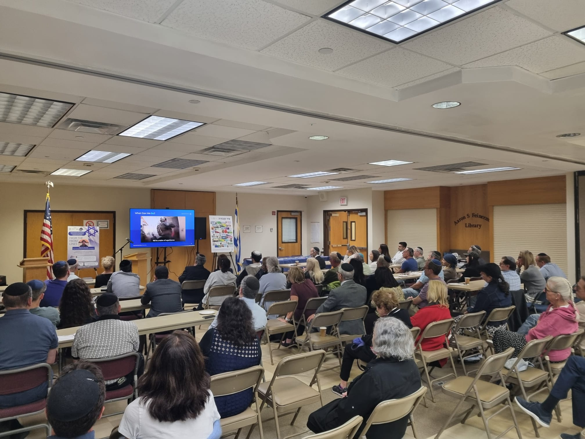
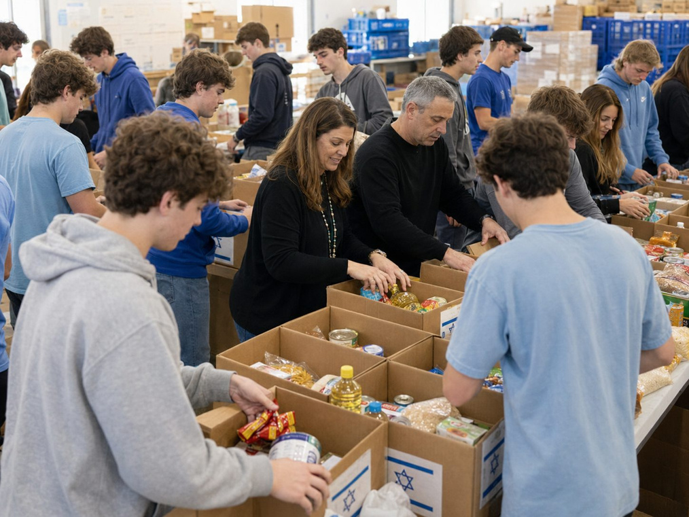

המנגנון
איך זה עובד
מהמפגש הראשון ועד לשותפות מבוססת — מדריך שלב אחר שלב.
מה אנחנו עושים
ארבעה שירותים ליבתיים
שירות 1
שידוך מדויק
מתאימים לכל קהילה מיזם הנצחה הקרוב לליבה, ומחברים אותה אל המשפחה השכולה שמאחוריו.
שירות 2
ליווי לאורך הדרך
מלווים את הקהילה מהמפגש הראשון ועד לשותפות מבוססת — ומתאימים את התהליך לצרכיה.
שירות 3
סבסוד וגיוס משאבים
מסבסדים את ביקור הקהילה במיזם, ופועלים לגיוס משאבים להרחבת הפעילות לקהילות רבות.
שירות 4
חומרים חינוכיים
מתאימים לכל קהילה את הערכים הציוניים והחינוכיים הנלמדים מדמות החייל, ומחברים את התלמידים לעשייה משמעותית.
המסלול
ארבעה שלבים, שביל אחד
בּוֹחֲרִים
הקהילה בוחרת מקרב מיזמי ההנצחה פרויקט הקרוב לליבה.
לוֹמְדִים
מכירים את הדמות, את סיפורה ואת ערכי הגבורה והחוסן שלה.
מְאַמְּצִים
הופכים לשותפים פעילים בהנצחה — בקהילה המקומית או בישראל.
בּוֹנִים
שותפות חינוכית, כלכלית ויזמית — והשביל רק מתחיל.
תוצרים של המיזם
מה יוצא מזה
מרחיבים את מעגל הזיכרון של גיבורי האומה
מחזקים את החוסן והזהות היהודית מול אתגרי התקופה
מייצרים שביל אמיתי לעשייה חברתית בישראל
מחנכים ליוזמה, לקיחת אחריות ומעורבות יהודית פעילה
מייצרים שבילים חדשים בין ישראלים לאחיהם בתפוצות
הוכחה מהשטח
מסיפור — למעשה
הנה איך נראית שותפות אמיתית בפועל.

בכיתה, מעבר לים
הורים שכולים מספרים לתלמידים בקהילה על בנם — על חייו, ערכיו וגבורתו. מפגש שמחבר לב אל לב, מעבר לאוקיינוס.

בשטח, בישראל
השותפים מהתפוצות מגיעים לישראל, שותפים בפעילות המיזם ומרחיבים אותו יחד עם המשפחה — מהמדף לשביל.
מודל השותפות
שלוש דרגות מעורבות
עמותת בשבילנו פועלת לגיוס משאבים נוספים להרחבת המיזם ולסבסוד המשלחות הבאות לישראל.
ליווי מקומי
ליווי כספי של כל שלבי ההטמעה המקומית: ביצוע פרויקט הנצחה מקומי, ארגון נציגות מהמשפחה השכולה, והפצת סיפורו של הנופל.
שותפות בישראל
+ כל מה ש-BASIC
בנוסף — מעורבות בפרויקט ההנצחה בישראל, שותפות כספית ומעורבות בהגדלתו ובהפצתו.
הובלה והרחבה
+ כל מה ש-PREMIUM
בנוסף — משלחות לישראל (בסבסוד העמותה), קידום משמעותי של המיזם ושכפולו למקומות נוספים.